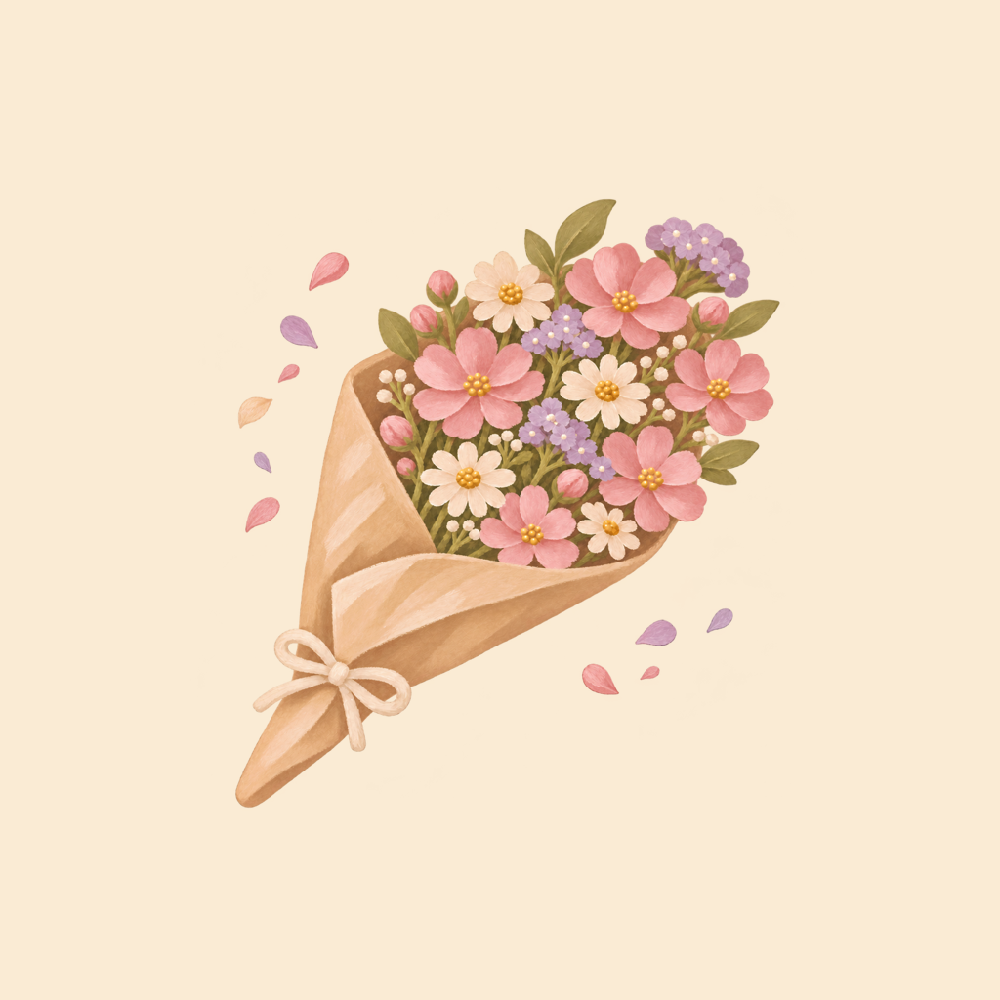
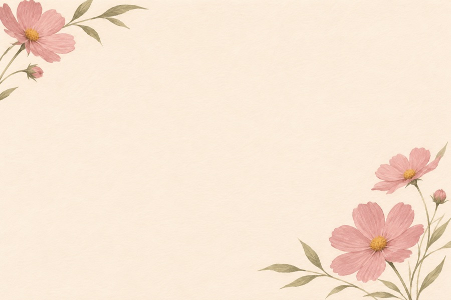
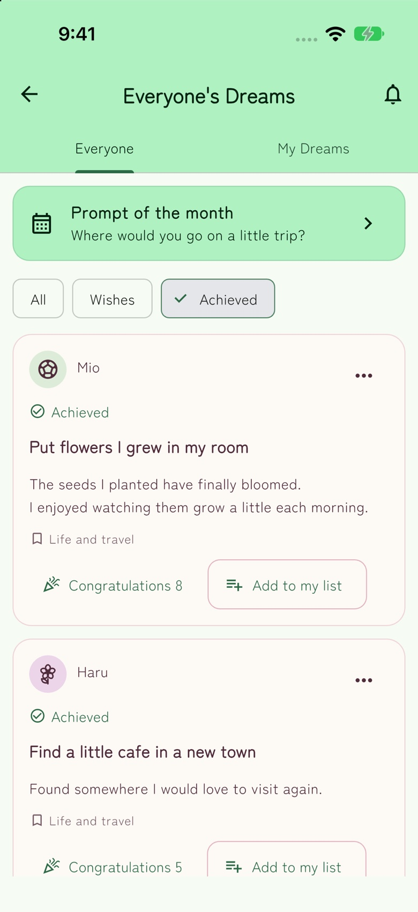

Funcionalidades básicas
Grátis
Regista desejos e conquistas, guarda fotografias e notas, imagina o futuro e revê recordações. Inclui cópias de segurança, restauro e designs básicos. Também podes publicar e reagir na comunidade.

My Dreams 100A tua lista de coisas para fazer
Aquele lugar que queres visitar. Os pequenos prazeres do dia a dia.
Guarda-os nos teus cartões favoritos e começa a fazer planos.

Antes de chegar a cem, começa por um.
Um café tranquilo, um livro por ler, alguém que queres rever. Regista o que te vier à cabeça e escolhe cartões de que gostes. Sempre que abrires a lista, podes encontrar algo que queiras fazer a seguir.
Encontra coisas que queres fazer com perguntas e ideias para te inspirar.
Escolhe designs de cartões, fundos e cores de que gostes.
Guarda os pequenos passos e o que sentiste pelo caminho.
01 / Descobre
Não precisas de cem ideias de uma vez. Responde a uma pergunta ou explora as sugestões e escreve, pelas tuas palavras, o que gostavas de fazer.
«Se tivesses tempo e dinheiro ilimitados, o que gostavas de fazer?»
Guarda os teus gostos, os teus valores e os teus planos em «Meu eu do futuro».

02 / Dá-lhe o teu toque
Uma lista simples num dia, um diário com autocolantes no outro. Combina cartões, fundos e cores para dar à lista um toque só teu.



Estes três designs estão disponíveis por compra única ou com uma subscrição Premium ativa. Também há designs básicos gratuitos.
03 / Imagina o futuro
Como gostavas de passar os teus dias daqui a uns anos? Guarda o que pensas hoje, mesmo sem teres todas as respostas. Junta uma fotografia ou uma ilustração da aplicação e volta a olhar mais tarde.
As respostas de «Meu eu do futuro» ficam guardadas no dispositivo e não são publicadas automaticamente.

04 / Recorda
Junta fotografias e notas às tuas conquistas. O álbum mensal reúne o que fizeste e os registos que guardaste. Os pequenos passos também merecem ficar na memória.

Quando apetece um pouco de inspiração
Explora o tema do mês ou os desejos de outras pessoas. Partilha as conquistas que escolheres, dá os parabéns a alguém ou acrescenta uma ideia à tua lista.
Partilhar é opcional. Também podes usar a lista e guardar as tuas recordações só para ti.

Escolhe como a queres usar
Funcionalidades básicas
Regista desejos e conquistas, guarda fotografias e notas, imagina o futuro e revê recordações. Inclui cópias de segurança, restauro e designs básicos. Também podes publicar e reagir na comunidade.
Packs de compra única
Escolhe um pack com cartões e o fundo a condizer, ou o pack de tipos de letra adicionais. O que comprares continua disponível depois de a subscrição Premium terminar.
Premium
Sem anúncios, com os designs, fundos e tipos de letra incluídos, organização de etiquetas em conjunto e criação e gestão de listas próprias.
Consulta os preços e o conteúdo na loja da aplicação. A compra de packs de design ou de tipos de letra não remove os anúncios.
Podes começar com uma só. As perguntas e as ideias preparadas ajudam-te a acrescentar mais sempre que te lembrares de alguma coisa.
A tua lista pessoal não é publicada automaticamente. Tu escolhes os cartões que queres partilhar com a comunidade.
Exporta os teus registos com a cópia de segurança e restaura-os mais tarde. Não há sincronização automática entre dispositivos. As compras são restauradas na loja onde foram feitas.
Precisas de ajuda ou tens uma sugestão? Indica a versão da aplicação e o modelo do dispositivo para podermos verificar.
Contactar o apoio Consultar ou denunciar uma publicação